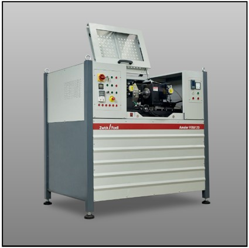
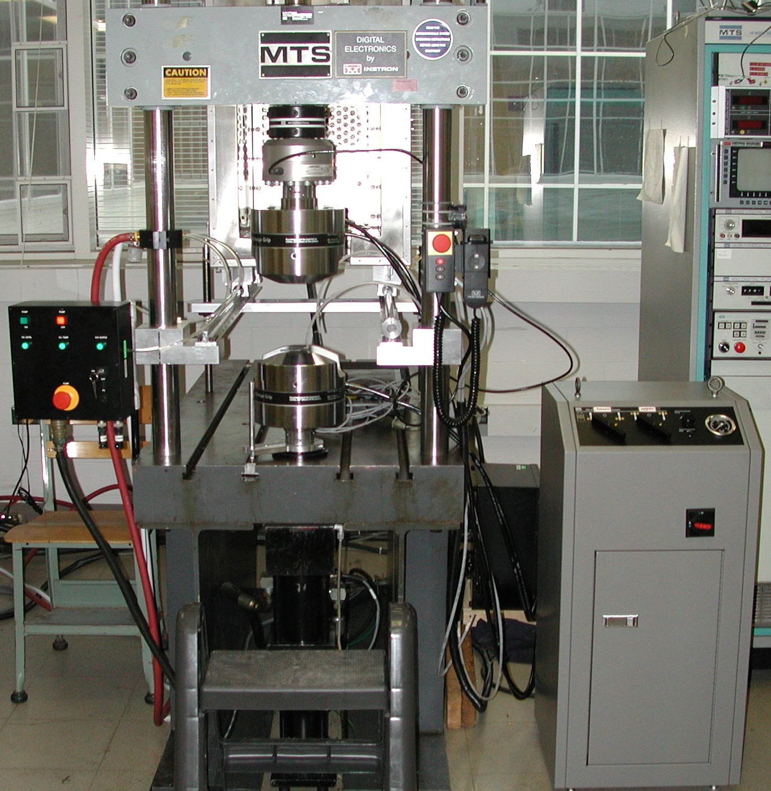
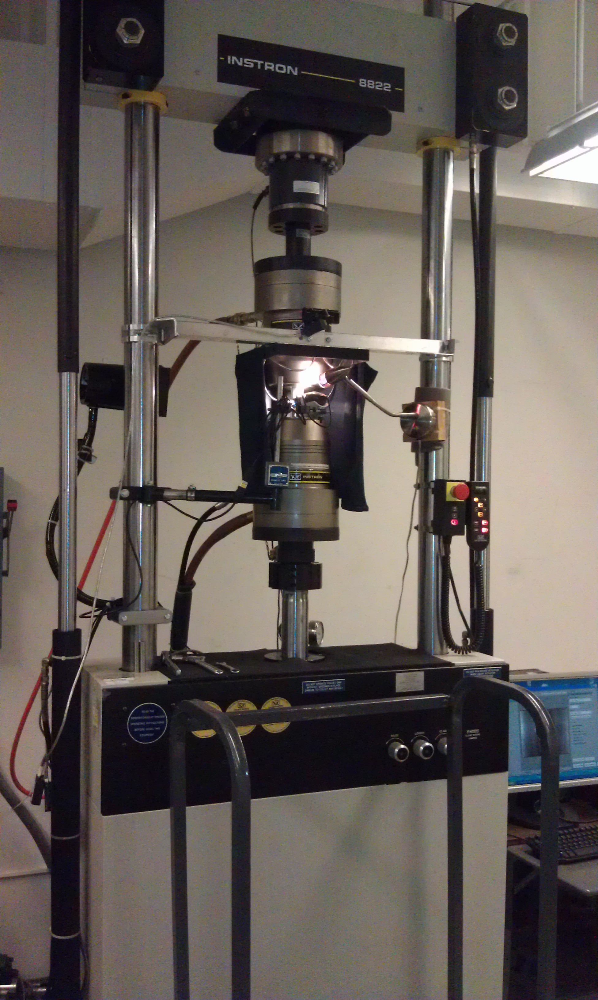
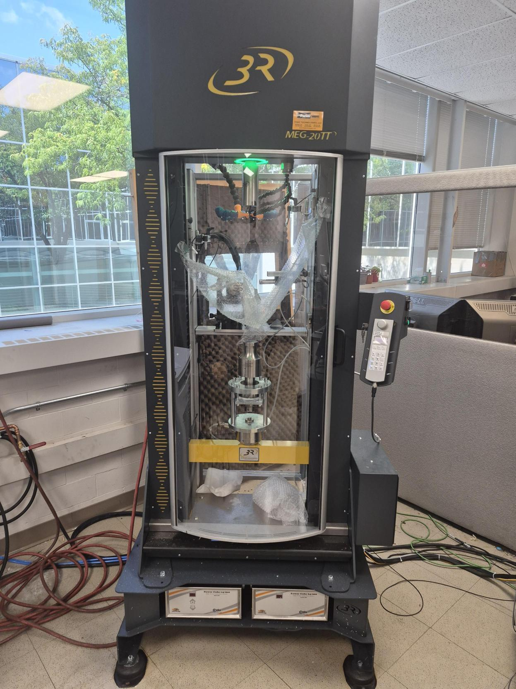

Experimental Facilities
F3L houses a suite of servo-hydraulic, rotary bending, and ultrasonic fatigue testing systems capable of accelerating fatigue-life quantification into the very-high and giga-cycle regimes across ambient and extreme-temperature environments.

Ultrasonic Fatigue Testing (USF-2000A)
- High-frequency (20 kHz) very-high and giga-cycle fatigue testing
- Capable of reaching 1010 cycles in as few as six days

ARBM 120 Amsler Rotary Bending Machine
- Equipped with an AHTF 850-A high-temperature furnace
- High-throughput rotating bar bending up to 109 cycles
- Operating elevated temperatures up to 850°C

Hydraulic 100 kN Axial Load Frame
- MTS closed-loop, servo-hydraulic load frame
- Paired with digital servo-controllers and an environmental chamber

Biaxial (Axial & Torsion) Load Frame
- Instron closed-loop, servo-controlled multiaxial test frame
- 100 kN axial loading capacity paired with 1 kNm torsional capacity

MEG 20TT High-Temperature Ultrasonic System
- High-temperature accelerated ultrasonic fatigue tester
- 20 kN load capacity with a maximum test temperature of 1200°C
Testing Capabilities
Our infrastructure supports a comprehensive spectrum of standardized and specialized mechanical characterization protocols:
- tensile and compression testing
- Strain-controlled fatigue testing (ε-N)
- Load-controlled fatigue testing (S-N)
- Displacement-controlled ultrasonic fatigue testing (20 kHz)
- Ambient and non-ambient temperature (cryogenic and elevated) ultrasonic fatigue testing
- Ambient and elevated-temperature rotating bending fatigue testing
- In-situ and ex-situ corrosion fatigue testing
- Advance post-mortem characterization (Fractography)